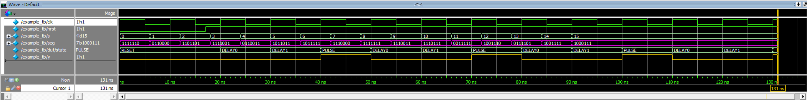
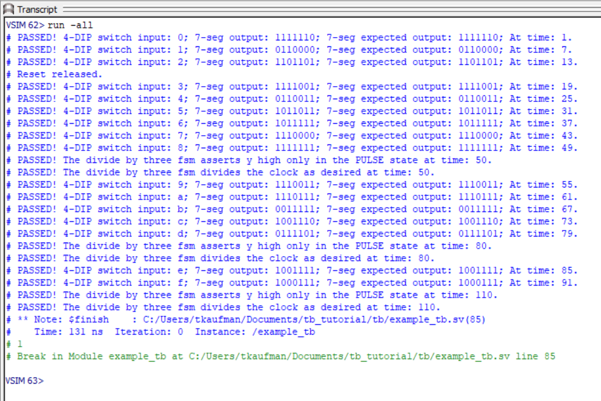

Testbench Example
Introduction
To robustly test your design without testvectors, you can use assertions. The example testbench below demonstrates how to use immediate and concurrent assertions to verify seven segment display logic and a divide by 3 counter FSM.
Quick Design Review
The device under test used in the example is fairly straightforward. This includes a simple seven segment decoder and a divide by 3 counter FSM that contains four states: RESET, DELAY0, DELAY1, and PULSE.
A 7-segment decoder that converts 4-bit input (s) into the correct 7-segment display output (seg)
A divide by 3 counter FSM generates a pulse (y) every three clock cycles
In verification, it’s important to consider functional coverage. This ensures that all intended features and scenarios of the design are tested. For example, checking that every state in the FSM is exercised, and every 7-segment digit output is driven at least once.
Testbench Code Explanation
Key terms:
assert: A statement that checks whether a given condition or property holds during simulation. If the condition fails, the simulator reports an error. Used to verify correctness of design behavior.
property: A named description of a behavior or sequence of events that the design is expected to follow. Properties are the things being checked or asserted.
disable: A keyword that allows a property or assertion to be turned off (aborted) when a certain condition is met. This prevents false failures when the property is no longer relevant.
iff: Stands for if and only if. It attaches a condition to an assertion or property. This means that the check is only performed when the condition is true.
Implication (|->): The implication operator. It specifies that if the left-hand side condition is true at a given time, then the right-hand side sequence must also hold. In other words, one behavior implies another.
Concurrent Assertions for the FSM
The testbench uses SystemVerilog properties and concurrent assertions to formally describe the expected behavior of the FSM.
Property #1
property pulse_after_delay;
@(posedge clk)
disable iff (~nrst)
(dut.state == dut.DELAY0) |-> ##2 (dut.state == dut.PULSE && y == 1);
endpropertyThis says: On a rising clock edge, if the FSM is in the DELAY0 state (while reset is inactive), then two clock cycles later it must be in the PULSE state and y must be high.
Property #2
property y_only_in_pulse;
@(posedge clk)
disable iff (~nrst)
(y == 1) |-> (dut.state == dut.PULSE);
endpropertyThis says: If y is high, then the FSM must be in the PULSE state. This enforces that the signal y is only active in one state, catching illegal behavior.
Assertions on these properties
assert property (pulse_after_delay)
$display("PASSED!...");
else
$error("FAILED!...");Each property is wrapped in an assertion. If the property holds, a “PASSED!” message is printed. If not, a “FAILED!” error is thrown with the current simulation time.
These are concurrent assertions. They monitor signal behavior across time, checking sequences of events.
Immediate Assertions for the 7-Segment Decoder
Inside the stimulus block, the testbench drives all 16 possible inputs into the decoder and immediately checks the outputs:
assert (seg == expected[i])
$display("PASSED!...");
else
$error("FAILED!...");This is an immediate assertion because it checks a condition right now. If the actual output doesn’t match the expected lookup table, the testbench reports a failure.
This tests combinational correctness of the decoder logic for every input value.
Testbench Code
`timescale 1ns / 1ns
module example_tb();
// set up signals
logic clk; // system clock
logic nrst; // active low reset
logic [3:0] s; // 4-bit switch input
logic [6:0] seg; // 7-segment output
logic y; // clock divided signal
// expected outputs for inputs 'd0 to 'd15
logic [6:0] expected [0:15] = '{
7'b111_1110, // 0
7'b011_0000, // 1
7'b110_1101, // 2
7'b111_1001, // 3
7'b011_0011, // 4
7'b101_1011, // 5
7'b101_1111, // 6
7'b111_0000, // 7
7'b111_1111, // 8
7'b111_0011, // 9
7'b111_0111, // A
7'b001_1111, // B
7'b100_1110, // C
7'b011_1101, // D
7'b100_1111, // E
7'b100_0111 // F
};
// instantiate the device under test
example dut(clk, nrst, s, seg, y);
// generate a clock signal with 10 timesteps
always begin
clk = 1; #5;
clk = 0; #5;
end
// reset sequence
initial begin
nrst = 0; #17;
nrst = 1;
$display("Reset released.");
end
// create divideby3 properties
property pulse_after_delay;
@(posedge clk)
disable iff (~nrst)
(dut.state == dut.DELAY0) |-> ##2 (dut.state == dut.PULSE && y == 1);
endproperty
property y_only_in_pulse;
@(posedge clk)
disable iff (~nrst)
(y == 1) |-> (dut.state == dut.PULSE);
endproperty
// set up concurrent assert statements
assert property (pulse_after_delay)
$display("PASSED! The divide by three fsm divides the clock as desired at time: %0t.", $time);
else
$error("FAILED! The divide by three fsm behaves incorrectly at time: %0t.", $time);
assert property (y_only_in_pulse)
$display("PASSED! The divide by three fsm asserts y high only in the PULSE state at time: %0t.", $time);
else
$error("FAILED! The divide by three fsm behaves incorrectly at time: %0t.", $time);
// stimulate and check 7-seg logic
initial begin
// loop over immediate assert statements to check the 7-seg logic
for (int i = 0; i < 16; i++) begin
s = i;
#1;
assert (seg == expected[i])
$display("PASSED! 4-DIP switch input: %0h; 7-seg output: %b; 7-seg expected output: %b; At time: %0t.", i, seg, expected[i], $time);
else
$error("FAILED! 4-DIP switch input: %0h; 7-seg output: %b; 7-seg expected output: %b; At time: %0t.", i, seg, expected[i], $time);
#5;
end
#35;
$finish;
end
// Add a timeout to prevent infinite loops
initial begin
#1_000_000; // 1 ms timeout
$error("Testbench timeout! Test did not complete in time.");
$stop;
end
endmoduleWaveform and Transcript Outputs
The pink signal represents the 7-segment display output while the gold signal is the divide by three counter output (y). The FSM’s current state signals are represented in the waveform by their names.


Extra Topics Of Interest
For the interested student who has time on their hands, feel free to explore other verification methods in making robust testbenches. In addition to powerful assertions, there are:
task: A reusable block of code that performs some action. It can contain timing controls unlike a function
queue: A dynamic array. Useful to hold sequences of input, expected outputs, or events. For example, queues can be used to compare I/O data for FIFO and UART loopback testing
random/random_range: Perfect for signed and unsigned randomized testing